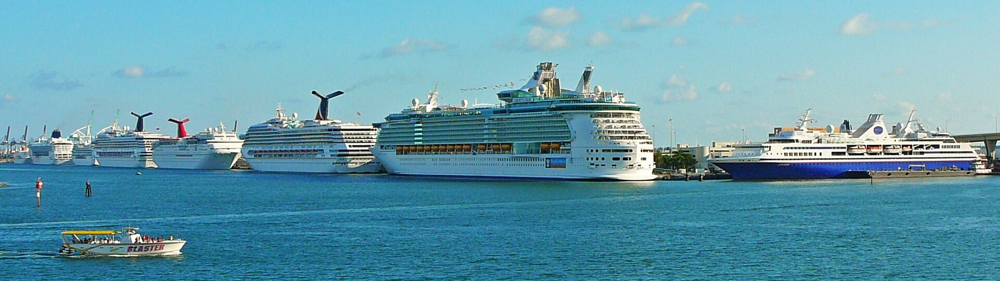

Florida is the southeasternmost U.S. state, with the Atlantic on one side and the Gulf of Mexico on the other. It has hundreds of miles of beaches. The city of Miami is known for its Latin-American cultural influences and notable arts scene, as well as its nightlife, especially in upscale South Beach. Orlando is famed for theme parks, including Walt Disney World.
Governor: Ron DeSantis (Republican Party)
Population: 21.78 million (2021)
State flower: Orange blossom
Senators: Rick Scott (Republican Party), Marco Rubio (Republican Party)
Consent age: 18 years old hubbslawfirm.com
Admitted to the Union: March 3, 1845; 178 years ago (27th)
European Arrival
Florida was the first region of what is now the contiguous United States to be visited and settled by Europeans. The earliest known European explorers came with the Spanish conquistador Juan Ponce de León. Ponce de León spotted and landed on the peninsula on April 2, 1513. He named it La Florida in recognition of the verdant landscape and because it was the Easter season, which the Spaniards called Pascua Florida (Festival of Flowers). The following day they came ashore to seek information and take possession of this new land. The story that he was searching for the Fountain of Youth is mythical and appeared only long after his death.[16] In May 1539, Conquistador Hernando de Soto skirted the coast of Florida, searching for a deep harbor to land. He described a thick wall of red mangroves spread mile after mile, some reaching as high as 70 feet (21 m), with intertwined and elevated roots making landing difficult.The Spanish introduced Christianity, cattle, horses, sheep, the Castilian language, and more to Florida. Spain established several settlements in Florida, with varying degrees of success. In 1559, Don Tristán de Luna y Arellano established a settlement at present-day Pensacola, making it one of the firsts settlements in Florida, but it was mostly abandoned by 1561.
Climate
The climate of Florida is tempered somewhat by the fact that no part of the state is distant from the ocean. North of Lake Okeechobee, the prevalent climate is humid subtropical (Köppen: Cfa), while areas south of the lake (including the Florida Keys) have a true tropical climate (Köppen: Aw, Am, and Af).[77] Mean high temperatures for late July are primarily in the low 90s Fahrenheit (32–34 °C). Mean low temperatures for early to mid January range from the low 40s Fahrenheit (4–7 °C) in north Florida to above 60 °F (16 °C) from Miami on southward. With an average daily temperature of 70.7 °F (21.5 °C), it is the warmest state in the U.S.[78][79]
Population
The U.S. Census Bureau estimated that the population of Florida was 21,477,737 on July 1, 2019, a 14.24% increase since the 2010 United States census.[153] The population of Florida in the 2010 census was 18,801,310.[154] Florida was the seventh fastest-growing state in the U.S. in the 12-month period ending July 1, 2012.[155] In 2010, the center of population of Florida was located between Fort Meade and Frostproof. The center of population has moved less than 5 miles (8 km) to the east and approximately 1 mile (1.6 km) to the north between 1980 and 2010 and has been located in Polk County since the 1960 census.[156] The population exceeded 19.7 million by December 2014, surpassing the population of the state of New York for the first time, making Florida the third most populous state.[157][158] The Florida population was 21,477,737 residents or people according to the U.S. Census Bureau's 2019 Population Estimates Program.[159] By the 2020 census, its population increased to 21,538,187.
Places To Visit
- Miami
- keywest
- orlando
- sarasotta
- st.Augustine
- NASA
Miami
Miami (/maɪˈæmi/ my-AM-ee), officially the City of Miami, is a coastal metropolis and the seat of Miami-Dade County in South Florida. With a population of 442,241 as of the 2020 census,it is the second-most populous city in the U.S. state of Florida after Jacksonville. It is the core of the much larger Miami metropolitan area, which, with a population of 6.14 million, is the second-largest metropolitan region in the Southeast and ninth-largest metropolitan region in the United States. Miami has the third-largest skyline in the U.S. with over 300 high-rises, 58 of which exceed 491 ft (150 m).
Things to do
Keywest
Key West, a U.S. island city, is part of the Florida Keys archipelago. It's also Florida's southernmost point, lying roughly 90 miles north of Cuba. Famed for its pastel-hued, conch-style houses, it’s a cruise-ship stop also accessible from the mainland via the Overseas Highway. It’s known more for its coral reefs – destinations for diving and snorkeling – than for its beaches.

Things to do
Orlando
Orlando (/ɔːrˈlændoʊ/ or-LAN-doh) is a city in, and the county seat of, Orange County, Florida, United States. Part of Central Florida, it is the center of the Orlando metropolitan area, which had a population of 2,509,831 in 2017, according to the U.S. Census Bureau. It is the sixth-largest metropolitan area in the Southern United States and the third-largest metropolitan area in Florida behind Miami and Tampa Bay. Orlando had a city population of 307,573 in the 2020 census, making it the fourth-most populous city in Florida behind Jacksonville, Miami, and Tampa. It is the state's most populous inland city. Orlando is one of the most-visited cities in the world primarily due to tourism, major events, and convention traffic. It is the third-most visited city in the U.S. after New York City and Miami, with over 2.9 million visitors as of 2022.[4] Orlando International Airport is the 13th-busiest airport in the United States and the 29th-busiest in the world.[5] The two largest and most internationally renowned tourist attractions in the Orlando area are the Walt Disney World Resort, opened by the Walt Disney Company in 1971 and located about 21 miles (34 km) southwest of downtown Orlando in Bay Lake, and the Universal Orlando Resort, opened in 1990 as a major expansion of Universal Studios Florida and the only theme park inside Orlando city limits.

Things to do
Miami to Keywest Itenary
| Sl.No | Itenary |
|---|---|
| 1 | Your first stop on your Miami to Key West road trip (once you hit the Keys) is Key Largo. This small island town is 69 miles from Miami and about a 1.5-hour drive. Some of the main attractions in Key Largo are John Pennekamp Coral Reef State Park |
| 2 | From Key Largo, the next area to make your way to is Marathon (48 miles away). On the way, you will see signs for Islamorada where youʻll find Lignumvitae Key State Park, Indian Key Historic State Park, and some really amazing craft breweries in Islamorada and Tavernier. |
| 3 | And finally, you can continue from Marathon to Key West which is about a 45-mile drive and just over an hour in driving time. One essential stop to make is Bahia Honda State Park, one of the gems of the Florida Keys! Be sure to make a half-day stop there and enjoy the 500 acres of beaches and nature trails on the uninhabited island! |
| 4 | Finally you will end up in Key West where you can grab a key lime pie, a cold beer or a margarita, and head to the beach or for a sunset sailing tour! A road trip from Miami to Key West will undoubtedly be one of the most memorable trips you will make in the southeastern United States! Here, don’t forget to visit Ernest Hemingway Home & Museum and the Key West Butterfly and Nature Conservatory. Duval Street is where all the action happens and is filled with restaurants and bars. The Key West Lighthouse is another must-do. |